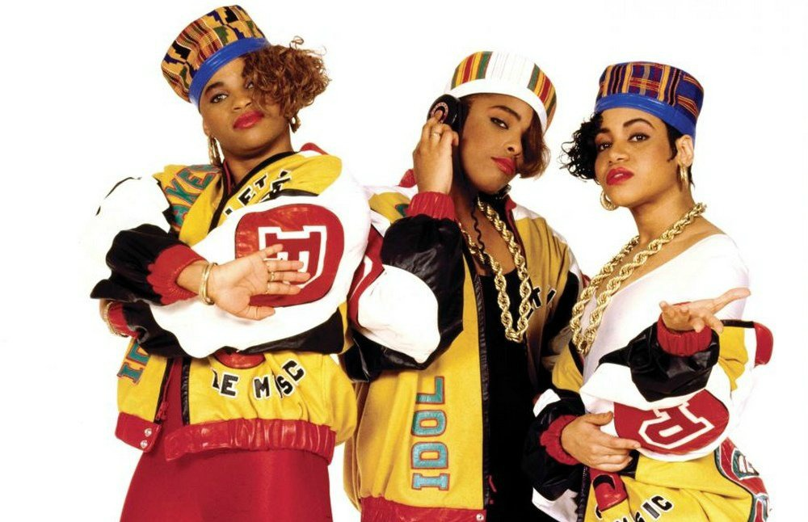
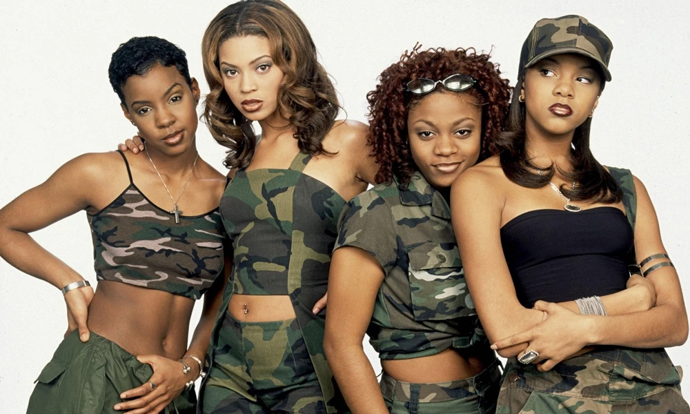

HipHop ML Proposal
Overview
Using machine learning and lyrics retrieved via the Genius API to classify songs as hip hop and RnB or not
Potential Problem Questions
- Determine whether a song is hip hop or RnB based on lyrics
Data Sources
Songs
Built a web scrapper to get a list of Billboard’s #1 Rap Songs from Wikipedia
Queried the Genius API using geniusr R package


Methods
Natural Language Processing (NLP)
Text mining to clean and organize the lyrics into analyzable data
TF-IDF to determine which words in each song separates that song from others
Neural Networks
- Use neural networks models to classify songs based on TF-IDF scores